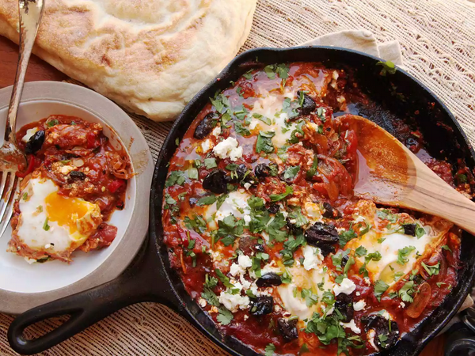

Perfect Breakfast: Shakshuka

If there should exist a perfect breakfast, it should be this one
So let's beging with the list of ingredients:
Ingredients:
- 3 tablespoons (45ml) extra-virgin olive oil, plus more for drizzling
- 1 medium onion, thinly sliced
- 1 large red pepper (bell pepper for milder heat, or a hotter variety, such as red horned pepper, depending on your heat preference), stems, seeds, and ribs removed, thinly sliced
- 1 fresh small hot chile (such as jalapeño, serrano, or Fresno), stems, seeds, and ribs removed, thinly sliced
- 2 to 3 cloves garlic, thinly sliced
- 1 1/2 tablespoons (15g) sweet Hungarian or smoked Spanish paprika
- 2 teaspoons (8g) whole or ground cumin seeds
- 1 (28-ounce; 800g) can whole peeled tomatoes, crushed by squeezing between your fingers or with a pastry blender (see notes)
- Kosher salt and freshly ground black pepper
- Large handful minced cilantro, parsley, or a mix
- 6 large eggs
- Sliced oil-cured black olives, feta cheese, and/or artichoke hearts, for serving (all optional)
- Crusty bread, for serving
Steps:
- Heat olive oil in a large, deep skillet or straight-sided sauté pan over high heat until shimmering.
Add onion, red pepper, and chile and spread into an even layer. Cook, without moving, until vegetables
on the bottom are deeply browned and beginning to char in spots, about 6 minutes. Stir and repeat.
Continue to cook until vegetables are fully softened and spottily charred, about another 4 minutes.
Add garlic and cook, stirring, until softened and fragrant, about 30 seconds. Add paprika and cumin and
cook, stirring, until fragrant, about 30 seconds. Immediately add tomatoes and stir to combine (see notes). Reduce heat to a bare simmer and simmer
for 10 minutes, then season to taste with salt and pepper and stir in half of cilantro or
parsley.
- Using a large spoon, make a well near the perimeter of the pan and break an egg directly into
it. Spoon a little sauce over edges of egg white to partially submerge and contain it,
leaving yolk exposed. Repeat with remaining 5 eggs, working around pan as you go. Season
eggs with a little salt, cover, reduce heat to lowest setting, and cook until egg whites
are barely set and yolks are still runny, 5 to 8 minutes.
- Sprinkle with remaining cilantro or parsley, along with any of the optional toppings. Serve
immediately with crusty bread.
Notes:
To crush the tomatoes, transfer to a large bowl and squeeze through your fingers to create a chunky purée. Alternatively, leave whole, add to the pan, and use a pastry blender to cut the tomatoes directly in the pan.